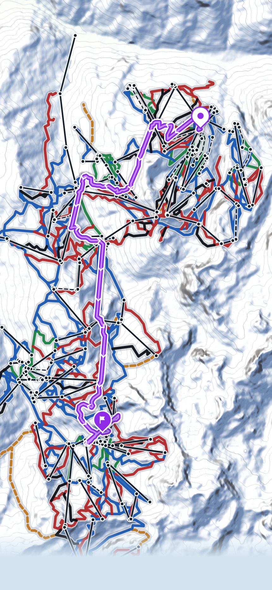
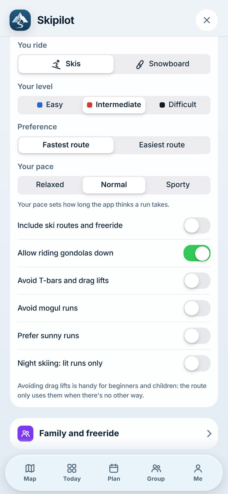
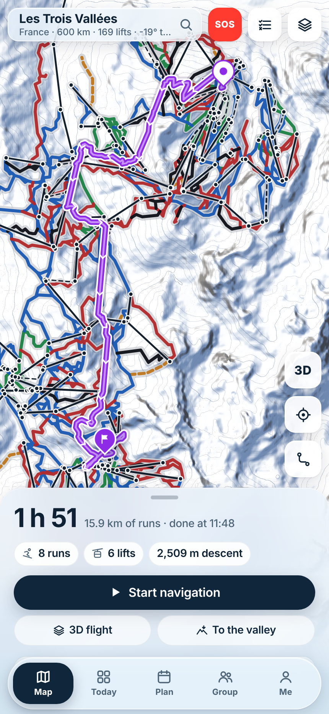

TIME
0.0KM
0LIFTS
0BLUE / GREEN
0RED
0BLACK
Can you cross Les 3 Vallées on blue runs only?
Courchevel → Val Thorens
Which resort
next?
Comment below 👇
Free on the App Store



Courchevel → Val Thorens
Comment below 👇
Free on the App Store